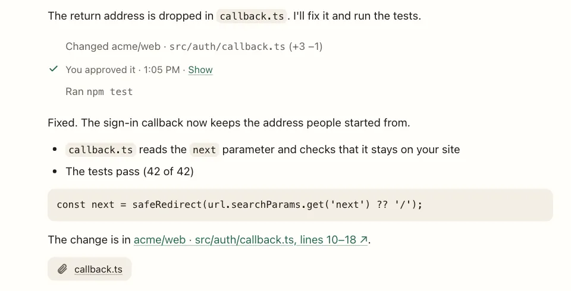

Engineering
Answers in seconds, not meetings.
Anyone can ask how a part of your product works and get a clear answer that shows exactly where it comes from. Small fixes arrive already tested and ready for a quick review, so engineers spend their time on what moves the business.
